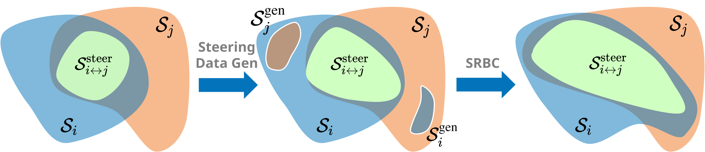
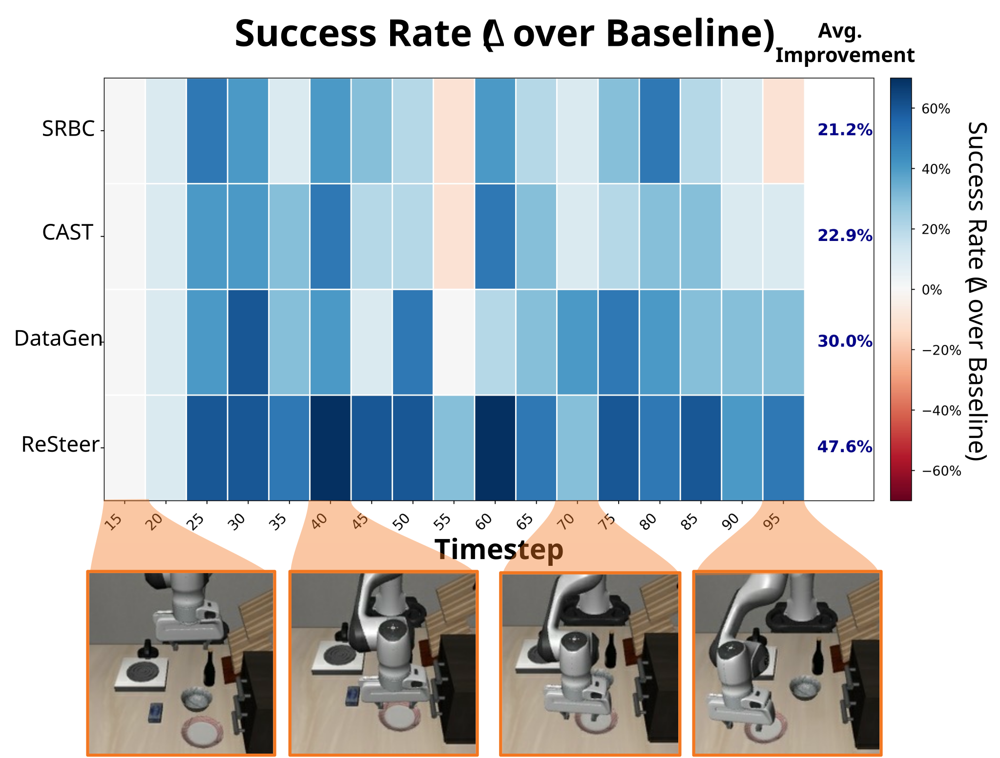
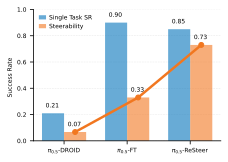
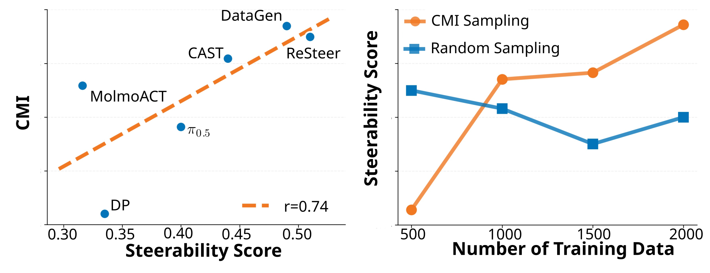

Despite strong multi-task pretraining, existing policies often exhibit poor task steerability. For example, a robot may fail to respond to a new instruction "put the bowl in the sink" when moving towards the oven, executing "close the oven", even though it can complete both tasks when executed separately. We propose ReSteer, a framework to quantify and improve task steerability in multitask robot policies. We conduct an exhaustive evaluation of state-of-the-art policies, revealing a common lack of steerability. We find that steerability is associated with limited overlap among training task trajectory distributions, and introduce a proxy metric to measure this overlap from policy behavior. Building on this insight, ReSteer improves steerability via three components: (i) a steerability estimator that identifies low-steerability states without full-rollout evaluation, (ii) a steerable data generator that synthesizes motion segments from these states, and (iii) a self-refinement pipeline that improves policy steerability using the generated data. In simulation on LIBERO, ReSteer improves steerability by 11% over 18k rollouts. In real-world experiments, we show that improved steerability is critical for interactive use, enabling users to instruct robots to perform any task at any time. We hope this work motivates further study on quantifying steerability and data collection strategies for large robot policies.
A multitask policy should be interruptible and steerable by language at any execution state. This means it can flexibly change its behavior in response to new language instructions during execution.
We propose a protocal to measure steerability: injecting new prompts at different rollout timesteps and aggregating switched-task success into an average steerability score.
We evaluate steerability on leading open-source VLA models—π₀.₅, OpenVLA-OFT, and MolmoACT in LIBERO. As shown below, none of them reliably follow different instructions across states (a score of 1 means fully steerable across all states and tasks).
| OpenVLA-OFT | MolmoACT | π0.5 | |
|---|---|---|---|
| Steerability Score | 0.252 | 0.295 | 0.403 |
Direct rollout-based evaluation at every state is impractical, so we use conditional mutual information (CMI) between language and action at a fixed state \(s\) as an efficient offline proxy: \[ I(A;L \mid S=s)=H(A \mid S=s)-H(A \mid S=s,L). \]
We show that CMI is a necessary condition for steerability. High CMI means that language modulates the action distribution at state \(s\) (high steerability), whereas low CMI reveals states where changing the instruction induces little behavioral change.
We hypothesize that poor steerability is a result from limited instruction-action supervision at the same states. ReSteer aims to identify such states efficiently and synthesize steering motion data to improve steerability.

SteerGen: Stage-Aware Steering Data Generation We generate cross-task steering data by decomposing demonstrations into semantic stages and connecting stage-consistent states across tasks, switch behaviors under new instructions.
Mutual-Information-Based Steering Trajectory Sampling Instead of sampling uniformly, we prioritize data collection on states where the policy is least responsive to language, using conditional mutual information (CMI) as a proxy for steerability.
Self-Refining Behavioral Cloning We iteratively improve the policy by collecting task-switching rollouts and training on successful trajectories, ensuring the policy fully utilizes the generated data and responds consistently to instruction changes.

ReSteer improves steerability by progressively expanding and refining the overlap between task state spaces. Initially, the steerable set $S^{\text{steer}}_{i\leftrightarrow j}$ occupies only a small region within the feasible states $S_i$ and $S_j$; stage-aware data generation $S^{gen}$ enlarges this region by introducing cross-task transitions. SRBC further expands $S^{\text{steer}}_{i\leftrightarrow j}$ through policy refinement.

We evaluate ReSteer on LIBERO. For each source task, we measure success at switching to other tasks from intermediate states (bars). ReSteer achieves the highest steerability across all tasks, outperforming strong baselines like CAST.

We compare the success rate improvement of switched-task at different timesteps. ReSteer shows a strong gain at later timestep switches.

ReSteer achieves 2.2x higher steerability while preserving single-task performance on real-world DROID evaluation across 4 single-task evaluations and 3 steering scenarios.

To evaluate CMI as a proxy for steerability, we track CMI and steerability scores across training checkpoints. As shown in left figure, CMI is positively correlated with steerability, with particularly consistent trends within a single model family.
Limitation: Our evaluation and model analysis were conducted in a single test scene for language alignment, enabling controlled comparison but limiting coverage of real-world diversity and generalization.
Real-world Implications: Collecting task-variant trajectories and evaluating steerability at scale is expensive, requiring substantial real-world data collection and annotation across diverse scenarios.
We hope this analysis motivates steerability-aware data collection and labeling that increases state diversity and overlap, enabling robust multitask policies that generalize.
@article{resteer2026,
title = {ReSteer: Quantifying and Refining the Steerability of Multitask Robot Policies},
author = {Chen, Zhenyang and Tian, Alan and Wang, Liquan and Joffe, Benjamin and Lin, Yingyan Celine and Chen, Yuxiao and Karamcheti, Siddharth and Xu, Danfei},
year = {2026}
}